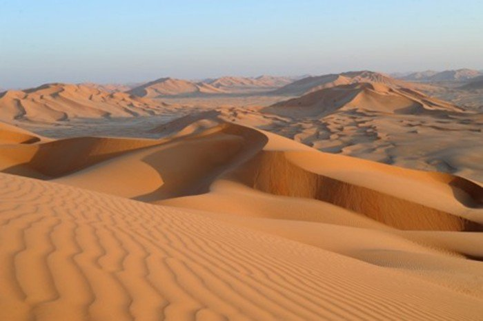
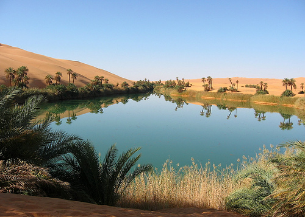
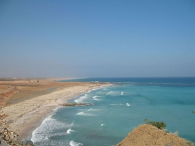
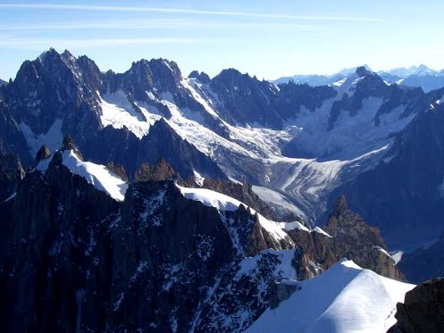

Arabia is located in between three continents: Asia, Africa, and Europe. Arabia is located on a huge piece of land also known as the Arabian Peninsula, and it is in the the land between the Red Sea and the Persian Gulf. There are seven other countries on the Arabian Peninsula: Yemen, Oman, Qatar, Bahrain, Kuwait, Saudi Arabia and the United Arab Emirates. This shows that the Arabian Peninsula was, and still is, a great place for trade. Arabia was at the crossroads of Asia, Africa, and Europe, and several trade routes ran through the Arabian Peninsula so many traders passed through this region. Because of its many connections with outside lands, Arabia, was exposed to many new ideas and products, and Arabians shared their knowledge with others as well. Arabian geography is very complex and the Arabian Peninsula contains various regions, such as vast deserts, mountains, and oases.
About ¾ of Arabia is covered in desert. In Arabia, summer temperatures in the day often linger around or rise above 120 degrees Fahrenheit. At night and during the winter, the temperature can drop to below freezing. Arab nomads called Bedouins lived in the desert and raised animals. They got almost everything that they needed from the animals, and they could trade whenever necessary. Some Bedouins controlled major trade routes that linked towns and villages. Traders traveled through deserts in caravans, and the places they rested at would grow and develop to become large towns.
Oases occur in areas where water has been trapped under the ground, and the water sprouts up to create a spring or waterhole. Realizing that they could grow crops at the oases, some Bedouins decided to settle down there. People who lived at oases grew fruits such as dates and peaches, and they also grew grains for bread. Date palm trees were a significant resource in Arabia, their palm leaves provided shade, and their dates were a source of food. Oases were not common, so many villages developed near them.
The coastal plain separates the mainland from the surrounding bodies of water (the Red Sea, the Arabian Sea, and the Persian Gulf). Arabia's coastal plain ranges between 5 and 40 miles inland, and it ends in lots of rocky cliffs. Rain is common, which makes the coastal plain suitable for farming. People built deep wells, dams, and irrigation systems to bring water to their farming land. In the sixth century, most people living on the coastal plain were farmers.They collected food and fragrant tree sap to trade with the Bedouins and the Europeans. There were also oceanic trade routes on or near the coastal plain which led to cities like Mecca and Aden. From there, merchants could trade with people from places like India and East Africa.
The mountains in Arabia act as a border between the coastal plain and the deserts. Arabia’s mountains range from 1,000 to 12,000 feet high. Moist winds from the Indian Ocean bring as much as 20 inches of rain per year. The rain and elevation help keep the temperatures in the mountains cool. Because of this, frost may form during the wintertime. People who have lived in the mountains of Arabia developed their own special lifestyle. It is likely that mountain dwellers in the sixth century lived in houses made of mud bricks and farmed on step-like platforms called terraces. They made these terraces by building low stone walls around narrow strips of land, and the low stone walls also kept water from running off their fields. These farmers also built dams, irrigation systems, and they stored their extra water in underground storage containers, leather bags, and hollowed-out trees. These mountain dwellers grew fruits such as melons and pomegranates, and they also produced frankincense and natural gum, called myrrh, from trees.
This is the geography of the Arabian Peninsula, the birthplace of Islam. Now, let's learn about how Islam came to be in the first place, and who founded it. NEXT -->